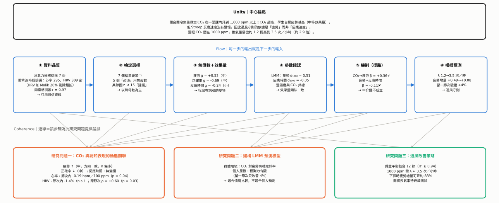
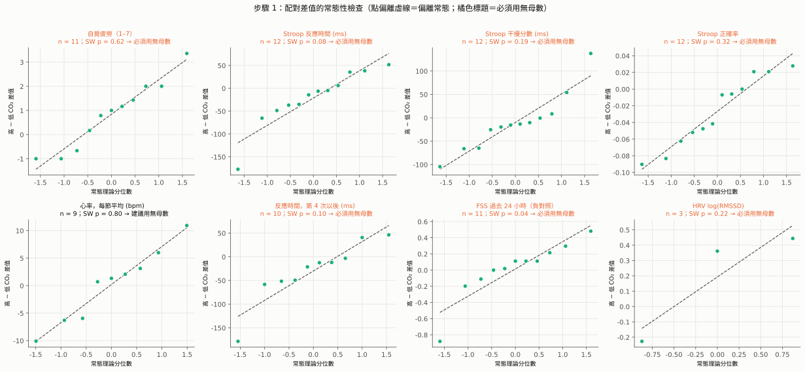
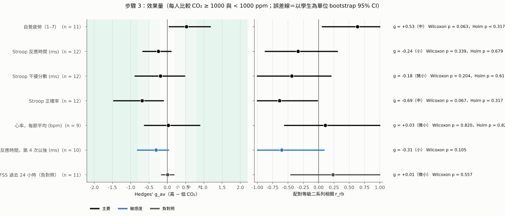
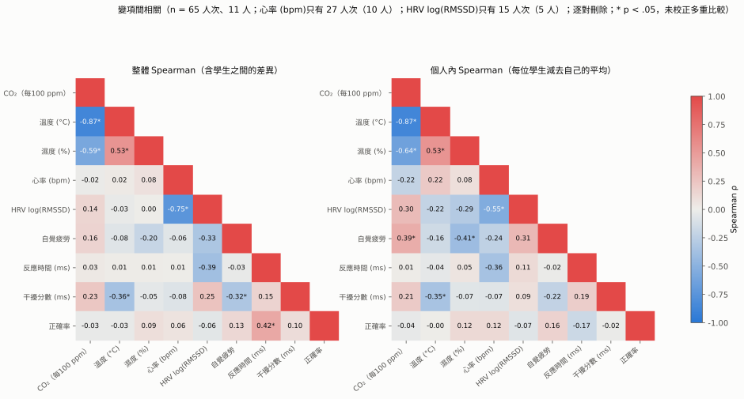
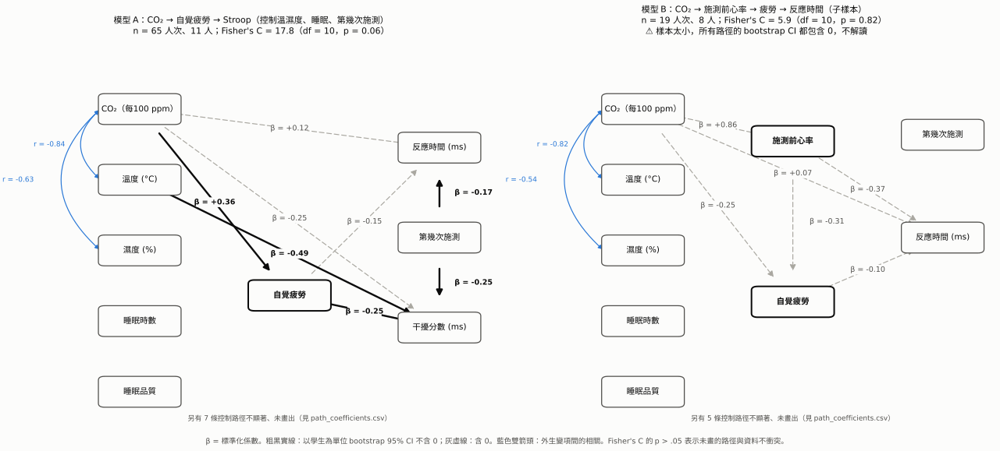
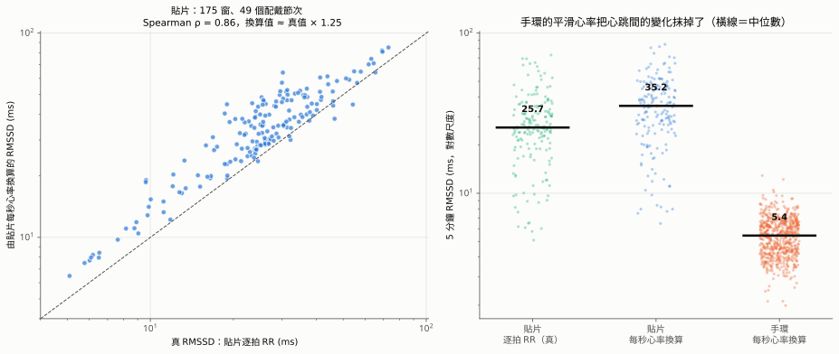
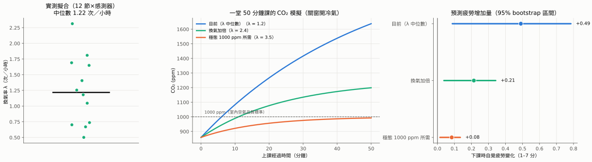

高中教室 CO₂ 對學生認知表現影響之預測模型
UCF 整合分析報告
讀法：本報告如何套用 UCF
| 原則 | 定義 | 在本報告中的做法 |
|---|---|---|
| Unity（統一） | 全文只服務一個中心論點 | §1 先寫出中心論點；後面每一節都標明它支持論點的哪一部分 |
| Coherence（連貫） | 每段之間有明確的邏輯關係，術語與單位一致 | 每一步都用相同格式：論點 → 論據 → 推論 → 限制；效果量一律用 Hedges' g（Cohen's d 的小樣本校正）；CO₂ 一律用兩台平均，以 1000 ppm 為界 |
| Flow（流動） | 讀者能從前一步自然走到下一步 | §2 的六個步驟依序排列，每一步的「輸出」就是下一步的「輸入」 |
§1 Unity｜中心論點
關窗開冷氣使教室 CO₂ 在一堂課內升到 1,600 ppm 以上；CO₂ 越高，學生自覺疲勞越高（中等效果量，g ≈ 0.5），但 Stroop 反應速度沒有變慢。因此，通風守則的科學依據應該是「疲勞」而非「反應速度」；要把 CO₂ 控制在 1000 ppm，換氣量需要從目前約 1.2 次／小時提高到約 3.5 次／小時。
這個論點與研究目的的對應：
| 研究目的（計畫書） | 研究問題 | 中心論點中回答它的部分 | 主要證據 |
|---|---|---|---|
| (一) 探討 CO₂ 與各項認知表現的動態關聯 | 問題一 | 「疲勞 ↑、反應速度不變」 | 步驟 ②③④⑤ |
| (二) 建立線性混合效應預測模型 | 問題二 | 「中等效果量」的模型斜率，可用於情境預測 | 步驟 ④⑥ |
| (三) 提出通風建議守則 | 問題三 | 「換氣量 1.2 → 3.5 次／小時」 | 步驟 ⑥ |
§2 Flow｜分析路線圖

- ① 資料品質排除不可信的資料輸出：可信的分析資料集
- ② 檢定選擇逐一檢查尺度、常態、離群值、天花板輸出：每個變項該用母數或無母數
- ③ 無母數＋效果量Wilcoxon、Hedges' g、r_rb輸出：哪些變項有訊號、多大
- ④ 參數確認LMM＋溫濕度調整輸出：效果量是否跨方法一致
- ⑤ 機制徑路分析（piecewise SEM）輸出：疲勞是不是中介
- ⑥ 模擬預測質量平衡＋情境模擬輸出：可執行的通風守則
§3 Coherence｜逐步論證
步驟 ① 資料品質：先確定拿來分析的資料是真的
- 論點
- 分析前必須先排除不可信的資料，否則後面所有效果量都可能被污染。
- 論據
- 疲勞量表的注意力檢核題：7 份未通過，全部來自同一位學生，已排除。
- 心電貼片：68 個「貼片 × 節次」中只有 30 個品質為
good。上一版曾出現由假心率（94.7% 異常拍、約 150 bpm）造成的偽顯著，已修正。 - 兩台 CO₂ 感測器 r = 0.97；但 09-24 起差距方向反轉（Wa1 從較低變成較高 62–216 ppm）。
- 推論
- 只用可信資料；CO₂ 一律用兩台平均。後面的等級檢定不受固定偏差影響，所以感測器的差距不會改變無母數結論。
- 限制
- 感測器差距反轉的原因未查明；手環沒有品質欄位，只能用數值合理性判斷。
→ 交給步驟 ② 82 筆 Stroop 人次、69 份疲勞問卷、55 筆逐人心率節次。
步驟 ② 檢定選擇：每一組資料該用母數還是無母數？
- 論點
- 12 人的重複測量資料，大多數結果變項都應以無母數檢定為主要證據。
- 論據
- 下方的判斷規則、決策表與 Q-Q 圖。
- 推論
- 8 個結果變項中，7 個「必須」用無母數，1 個（心率）「建議」用無母數。以 Wilcoxon 符號等級檢定作為主要檢定，配對 t 檢定只列出來對照。
- 限制
- n < 15 時，常態檢定本身的檢定力不足。「SW p > .05」不能證明是常態，只能說沒有被否定。
任一項成立 → 必須用無母數：
- 順序尺度
- 天花板效應 > 30%
- 配對差值的 Shapiro–Wilk p < .10
- 有離群值（距中位數超過 3 倍 MAD）
- |偏態| > 1
以上都沒有，但配對人數 < 15 → 建議用無母數。
| 結果變項 | 尺度 | 配對 n | 差值 SW p | 偏態 | 離群值 | 天花板 | 決策 | 主要理由 |
|---|---|---|---|---|---|---|---|---|
| 自覺疲勞（1–7） | 順序 | 11 | 0.62 | +0.15 | 0 | 9% | 必須 | 順序尺度 |
| Stroop 反應時間 | 比率 | 12 | 0.08 | −1.48 | 1 | 0% | 必須 | 非常態、偏態、離群值 |
| Stroop 干擾分數 | 差異分數 | 12 | 0.19 | +1.07 | 2 | 0% | 必須 | 偏態、2 個離群值 |
| Stroop 正確率 | 比例 | 12 | 0.32 | −0.15 | 0 | 38% | 必須 | 天花板效應 |
| 心率（每節平均） | 比率 | 9 | 0.80 | −0.08 | 0 | 0% | 建議 | n = 9 |
| 反應時間（第 4 次以後） | 比率 | 10 | 0.10 | −1.37 | 1 | 0% | 必須 | 偏態、離群值 |
| FSS（負對照） | 順序 | 11 | 0.045 | −1.68 | 1 | 10% | 必須 | 順序、非常態 |
| HRV log(RMSSD) | 連續 | 3 | — | — | 1 | 0% | 必須 | 只有 3 人，不做推論 |

環境變項（節次層級，n = 9）：CO₂、溫度、濕度的 Shapiro p 分別為 0.86、0.08、0.68，但只有 9 個點，而且 CO₂ 呈「上午低、下午高」的兩群分布，所以變項之間的相關一律用 Spearman 等級相關。
→ 交給步驟 ③ 以 Wilcoxon 為主檢定、以 Hedges' g 為效果量。
步驟 ③ 無母數檢定＋效果量：哪些變項有訊號？訊號多大？
- 論點
- CO₂ 升高時，自覺疲勞上升（中等效果）、正確率下降（中等效果），反應時間沒有變慢。
- 論據
- 下方效果量表與森林圖。比較方式：每位學生在 CO₂ ≥ 1000 ppm（環境部室內空氣品質標準）與 < 1000 ppm 的節次各取一個平均，形成配對資料。
- 推論
- 只看 p 值會得到「全部不顯著」（Holm 校正後最小 p = 0.32）；但效果量顯示疲勞與正確率是中等效果，而且 bootstrap 區間不含 0。在 n ≈ 11 時，「不顯著」主要反映檢定力不足：若 d_z = 0.61，n = 11 的檢定力只有 45%，要 80% 需要約 23 人。
- 限制
- 疲勞與正確率的 Wilcoxon p 只是邊緣（0.063、0.067），Holm 校正後都不顯著；高、低 CO₂ 的比較沒有控制施測順序，留給步驟 ④。
| 結果變項 | n | 上升／下降 | HL 中位差 | Wilcoxon p | Holm p | Hedges' g_av（95% CI） | 大小 | r_rb（95% CI） |
|---|---|---|---|---|---|---|---|---|
| 自覺疲勞 | 11 | 8／3 | +0.85 分 | 0.063 | 0.32 | +0.53（0.05, 1.18） | 中 | +0.64（0.06, 1.00） |
| Stroop 正確率 | 12 | 3／8 | −2.7% | 0.067 | 0.32 | −0.69（−1.47, −0.11） | 中 | −0.64（−1.00, −0.02） |
| Stroop 反應時間 | 12 | 4／8 | −14.5 ms | 0.34 | 0.68 | −0.24（−0.67, 0.11） | 小 | −0.33（−0.87, 0.31） |
| Stroop 干擾分數 | 12 | 3／9 | −13.9 ms | 0.20 | 0.61 | −0.18（−0.88, 0.48） | 微小 | −0.44（−1.00, 0.21） |
| 心率（每節平均） | 9 | 6／3 | +0.7 bpm | 0.82 | 0.82 | +0.03（−0.63, 0.89） | 微小 | +0.11（−0.56, 1.00） |
| 反應時間（第 4 次以後，敏感度） | 10 | 2／8 | −26 ms | 0.11 | — | −0.31（−0.82, 0.04） | 小 | −0.60（−1.00, 0.09） |
| FSS（負對照） | 11 | 7／3 | +0.06 | 0.56 | — | +0.01（−0.16, 0.18） | 微小 | +0.24（−0.45, 1.00） |

逐項論證
- 疲勞（核心證據）：11 人中 8 人在高 CO₂ 時比較累，中位差 +0.85 分（7 分量表），g = 0.53 屬中等效果。
- 負對照通過：FSS 問的是「過去 24 小時」，理論上不該跟當下 CO₂ 有關。結果 g = 0.01，CI 很窄而且緊貼 0，排除了「學生在高 CO₂ 節次就是習慣填比較高分」的解釋。
- 正確率（新出現的訊號）：12 人中 8 人在高 CO₂ 時正確率較低，g = −0.69，與計畫書引用的 Gong et al. (2026)「CO₂ 使正確率下降」方向一致。
- 反應時間（沒有變慢）：方向甚至略偏「變快」（g = −0.24）。配合第 3 點，高 CO₂ 時「稍快但較不準」，可能是速度—正確率的取捨，但證據不足以下定論。
→ 交給步驟 ④ 疲勞與正確率有訊號，需要用控制了施測順序和溫濕度的模型確認。
步驟 ④ 參數模型確認：效果量能不能跨方法重現？
- 論點
- 疲勞的效果量在兩種方法中一致；正確率的效果在控制施測順序後減弱。
- 論據
- 下表。LMM 版的效果量 d₁₀₀₀ = 每升高 1000 ppm 的係數 ÷ 個人內殘差標準差。
- 推論
- 疲勞：無母數 g 與 LMM 的 d₁₀₀₀ 幾乎相同（0.53 vs 0.51），而且 LMM 的 CI 不含 0 → 效果穩健。正確率：控制施測順序後從 −0.69 降到 −0.21，CI 含 0 → 部分訊號來自「測驗做越多次正確率越低」（個人內 ρ = −0.28），只能列為待確認。反應時間：d₁₀₀₀ 的 CI（−0.41 ～ 0.34）排除了中等以上的效果，「沒有變慢」是有根據的結論，不只是不顯著。
- 限制
- 疲勞 LMM 加入溫度與濕度後，係數變為 0.072（p = 0.078）；只用溫濕度、不放 CO₂ 的模型配適更好（AIC 低 4.5）。CO₂、溫度、濕度是同一個「關窗開冷氣」狀態的三個面向（CO₂ 與溫度 ρ = −0.87），無法分開。
| 結果變項 | 無母數 g_av | LMM d₁₀₀₀（95% CI） | 控制了什麼 | 兩法一致？ |
|---|---|---|---|---|
| 自覺疲勞 | +0.53 | +0.51（0.13, 0.90） | 睡眠、填寫次數 | ✔ 一致 |
| 正確率 | −0.69 | −0.21（−0.58, 0.16） | 施測次數 | △ 方向一致、強度減弱 |
| 反應時間 | −0.24 | −0.04（−0.41, 0.34） | 施測次數 | ✔ 都接近 0 |
| 干擾分數 | −0.18 | +0.33（−0.05, 0.70） | 施測次數 | ✘ 方向相反，不採信 |
| 心率 | +0.03 | +0.40（−0.44, 1.23） | — | ✘ 不穩定，不採信 |

→ 交給步驟 ⑤ 唯一跨方法穩健的是 CO₂ → 疲勞。接下來要問：疲勞有沒有把 CO₂ 的影響傳到認知表現？
步驟 ⑤ 機制：疲勞是不是 CO₂ 影響認知的中介？
- 論點
- CO₂ → 疲勞成立；疲勞 → 反應時間不成立，所以中介鏈不成立。
- 論據
- Piecewise SEM：每條方程都是學生隨機截距 LMM，以學生為單位 bootstrap 2,000 次。模型 A（n = 65 人次、11 人）：
- CO₂ → 疲勞 β = +0.36，95% CI 0.008 ～ 0.166 分／100 ppm ✔，已控制溫度、濕度、睡眠
- 疲勞 → 反應時間 β = −0.15，CI −46 ～ 11 ms ✘
- 間接效果 CO₂ → 疲勞 → 反應時間 = −0.88 ms，CI −6.1 ～ 1.1 ✘
- 模型適配 Fisher's C = 17.8，df = 10，p = 0.059（勉強可接受）
- 推論
- 疲勞上升是真的，但沒有轉化成反應變慢。這與 Snow et al. (2018)「主觀與客觀指標不同步」的觀察相呼應，只是方向相反：本研究是主觀先動、客觀（反應時間）沒動。
- 限制
- 「CO₂ → 疲勞 → 干擾分數」的 CI 雖然不含 0，但方向與理論相反（越累，干擾越小），而且干擾分數信度低（各情境只有 8 題），因此不採信。加入心率的模型 B 只有 20 人次、7 人，標準化係數超過 1（共線性），無法估計。

⑤-1 完整徑路係數：模型 A
n = 65 人次、11 人；Fisher's C = 17.8，df = 10，p = 0.059。✔ 表示以學生為單位的 bootstrap 95% CI 不含 0。
| 結果 ← 預測變項 | b（原單位） | 標準化 β | LMM p | bootstrap 95% CI | |
|---|---|---|---|---|---|
| 疲勞 ← CO₂（每 100 ppm） | +0.100 | +0.36 | 0.044 | 0.008 ～ 0.166 | ✔ |
| 疲勞 ← 溫度 (°C) | +0.801 | +0.25 | 0.108 | −0.207 ～ 1.734 | |
| 疲勞 ← 濕度 (%) | −0.066 | −0.16 | 0.131 | −0.157 ～ 0.001 | |
| 疲勞 ← 睡眠時數 | −0.643 | −0.45 | < 0.001 | −1.030 ～ 0.153 | |
| 疲勞 ← 睡眠品質 | −0.184 | −0.15 | 0.247 | −0.709 ～ 0.204 | |
| 反應時間 ← 疲勞 | −8.82 ms | −0.15 | 0.205 | −46.3 ～ 10.9 | |
| 反應時間 ← CO₂ | +1.85 ms | +0.12 | 0.496 | −3.8 ～ 8.8 | |
| 反應時間 ← 溫度 | +27.2 ms | +0.15 | 0.325 | −36.0 ～ 113.4 | |
| 反應時間 ← 濕度 | −1.03 ms | −0.04 | 0.712 | −3.4 ～ 1.8 | |
| 反應時間 ← 第幾次施測 | −6.58 ms | −0.17 | 0.083 | −11.07 ～ −0.07 | ✔ |
| 干擾分數 ← 疲勞 | −11.40 ms | −0.25 | 0.045 | −24.6 ～ −4.6 | ✔ |
| 干擾分數 ← CO₂ | −3.19 ms | −0.25 | 0.263 | −10.1 ～ 2.3 | |
| 干擾分數 ← 溫度 | −71.8 ms | −0.49 | 0.017 | −148.5 ～ −3.7 | ✔ |
| 干擾分數 ← 濕度 | −3.34 ms | −0.18 | 0.271 | −11.7 ～ 3.2 | |
| 干擾分數 ← 第幾次施測 | −7.95 ms | −0.25 | 0.049 | −16.2 ～ −2.1 | ✔ |
| 間接效果 | 估計值 | bootstrap 95% CI | bootstrap p |
|---|---|---|---|
| CO₂ → 疲勞 → 反應時間 | −0.88 ms | −6.08 ～ 1.12 | 0.66 |
| CO₂ → 疲勞 → 干擾分數 | −1.14 ms | −2.94 ～ −0.06 | 0.035（方向與理論相反，不採信） |
| 溫度 → 疲勞 → 反應時間 | −7.07 ms | −64.1 ～ 11.9 | 0.67 |
| 濕度 → 疲勞 → 反應時間 | +0.58 ms | −1.19 ～ 3.45 | 0.66 |
| 睡眠品質 → 疲勞 → 反應時間 | +1.62 ms | −6.85 ～ 14.28 | 0.94 |
模型 B（加入施測前 10 分鐘心率；n = 20 人次、7 人）：所有路徑的 bootstrap CI 都包含 0；CO₂ → 心率的標準化 β = +1.64（超過 1），表示共線性加上樣本過小，全部不解讀。
⑤-2 HRV 為什麼沒有進入徑路模型？
- 論點
- HRV 有計算，而且用的是正確的方法（逐拍 RR）；但能連到個別學生的 HRV 太少，無法放進徑路模型。手環的心率也不能換算成 HRV。
- 論據
- HRV 的來源：心電貼片的逐拍 RR 間隔，每 5 分鐘算一次 RMSSD，只用相鄰兩拍都正常的差值、品質
good的貼片，共 230 窗。 - 手環沒有 RR：207,690 個手環封包中，含 RR 間隔的是 0 個。
- 手環的每秒心率不能代替 RR：同樣的換算方法，貼片的每秒心率算出的 RMSSD 與真值高度一致（127 窗，ρ = 0.95，約為真值 × 1.11）；手環的每秒心率算出的 RMSSD 中位數只有 5.4 ms，貼片的真值是 27.9 ms，低估約 80%。手環與貼片不是同一人同時配戴，這是兩組分布的比較；但手環的換算值低於幾乎所有貼片窗的真值。
- 能連到學生的 HRV：研究代碼對照表只有 09-24 之後寫了貼片編號，再加上只能用品質 good 的貼片，只剩 4 位學生、162 窗；施測前 10 分鐘有 HRV、同一節也有疲勞和 Stroop 的，只有 7 人次、3 位學生。
- HRV 的來源：心電貼片的逐拍 RR 間隔，每 5 分鐘算一次 RMSSD，只用相鄰兩拍都正常的差值、品質
- 推論
- 3 人 7 筆無法估計含隨機截距的結構方程。HRV 目前只能在「裝置 × 節次」層級分析：CO₂ 每 100 ppm，log(RMSSD) +0.020（p = 0.18）；加入溫度後為 +0.037（p = 0.02）。
- 限制
- 「裝置 × 節次」無法區分是哪位學生，所以不能和疲勞、Stroop 連成路徑。

→ 交給步驟 ⑥ 可以拿來做預測的是「CO₂ → 疲勞」這條穩定的斜率（0.063 分／100 ppm）。
步驟 ⑥ 模擬預測：把斜率轉成可執行的通風守則
- 論點
- 目前關窗開冷氣時的換氣量約 1.2 次／小時，需要提高到約 3.5 次／小時，才能把 CO₂ 控制在 1000 ppm，並讓下課時的疲勞增量減少約 83%。
- 論據
- 質量平衡擬合（Persily & de Jonge, 2017）：12 段 CO₂ 上升曲線，R² ≥ 0.94，換氣率中位數 1.22 次／小時。
- 穩態推算：1000 ppm 所需換氣率 = 2,021 ÷ (1000 − 420) ≈ 3.5 次／小時。
- 情境模擬：一堂 50 分鐘的課，下課時疲勞增量從目前的 +0.49 分（95% 區間 0.09–0.78），降到 3.5 次／小時時的 +0.08 分（0.01–0.13）。
- 驗證：留一節次交叉驗證，加入 CO₂ 後 RMSE 改善 4.2%。
- 推論
- 模型適合比較群體層級的通風情境，不適合預測個別學生的分數（Riesterer et al., 2020）。
- 限制
- 情境結果代表「關窗開冷氣」整體狀態的效果，不是單獨降低 CO₂ 的效果；開窗時的換氣率還沒有實測。

| 情境 | 換氣率（次／小時） | 下課時 CO₂ | 超過 1000 ppm 的分鐘數 | 下課時疲勞增量（95% 區間） |
|---|---|---|---|---|
| 目前 | 1.22 | 1,637 ppm | 44 | +0.49（0.09, 0.78） |
| 換氣加倍 | 2.43 | 1,199 ppm | 39 | +0.21（0.04, 0.34） |
| 1000 ppm 目標 | 3.48 | 992 ppm | 0 | +0.08（0.01, 0.13） |
§4 回扣研究問題
| 研究問題 | 回答 | 證據強度 | 依據 |
|---|---|---|---|
| 問題一：CO₂ 與反應時間、生理訊號、自覺疲勞的動態關聯 | 疲勞：CO₂ 越高越累，中等效果（g = 0.53，d₁₀₀₀ = 0.51） 正確率：可能下降（g = −0.69），控制施測順序後減弱 反應時間：沒有變慢，排除了中等以上的效果 生理訊號：可信資料不足，無法回答 |
★★☆ 疲勞 ★★★ 反應時間（無效應） ★☆☆ 正確率 ☆☆☆ 生理 | ③④⑤ |
| 問題二：如何建構有效預測認知表現的 LMM | 以學生為隨機截距、控制睡眠與施測次數的疲勞 LMM，斜率 0.063 分／100 ppm（bootstrap CI 0.011–0.101）。適合群體情境預測；個人預測力有限（留一節次改善 4%） | ★★☆ | ④⑥ |
| 問題三：具體可行的環境改善策略 | 開冷氣時換氣量需達約 3.5 次／小時（目前約 1.2）；或改用定時開窗，但開窗時的換氣率需要先實測 | ★★☆ | ⑥ |
§5 反駁與限制
| 可能的質疑 | 回應 | 仍存在的風險 |
|---|---|---|
| 「疲勞上升是因為下午比較累，不是 CO₂」 | 09-24 之後有多節「上午開冷氣」，CO₂ 與上午／下午的相關從 0.93 降到 0.76；加入上午／下午後，係數 0.072 幾乎不變 | p 從 0.009 變成 0.083，證據變弱 |
| 「是溫濕度，不是 CO₂」 | 徑路模型控制溫濕度後，CO₂ → 疲勞仍成立 | 只用溫濕度的模型 AIC 更好，無法排除 |
| 「學生只是習慣在某些節次填高分」 | FSS 負對照 g = 0.01 | 單題自評仍可能受情境影響 |
| 「多重比較，碰巧顯著」 | 已用 Holm 校正並如實報告（全部 > 0.05）；改以效果量與跨方法一致性作為主要依據 | 正確率的訊號可能是偶然 |
| 「12 人太少」 | 用無母數＋學生層級 bootstrap，不依賴分配假設；並計算檢定力 | 疲勞的檢定力約 45%；要 80% 需約 23 人 |
| 「CO₂ 量錯了」 | 兩台 r = 0.97；等級檢定不受固定偏差影響 | 09-24 起差距反轉，原因未查 |
倫理備註 共 4 節在 2000 ppm 以上施測，與計畫書的中止條件不符，需與指導老師討論是否通報研究倫理審查委員會。
§6 下一步
- 擴大疲勞的證據：目標 ≥ 23 人，或增加更多「上午 CO₂ 高、下午 CO₂ 低」的節次，讓疲勞效果的檢定力達到 80%。
- 確認正確率的訊號：分析中固定控制施測次數；考慮把 Stroop 正式題增加到每種情境 16 題以上，降低天花板效應、提高干擾分數的信度。這需要提出計畫變更。
- 開窗衰減測試：開窗後記錄 10 分鐘的 CO₂ 下降，估出開窗時的換氣率，才能把「定時開窗」寫進守則。
- 感測器並排校正：查明 09-24 的差距反轉。
- 心率資料：只保留穩定的貼片（E2603-10、E2605-04），並固定由同一位學生配戴同一個裝置。
附錄 A｜效果量與檢定的定義
| 指標 | 公式／做法 | 解讀 |
|---|---|---|
| Cohen's d_z | 差值平均 ÷ 差值標準差 | 配對設計的標準化差異 |
| Cohen's d_av | 差值平均 ÷ 兩條件標準差的平均（Lakens, 2013） | 較接近一般的組間 d，比 d_z 保守 |
| Hedges' g | d × J，J = 1 − 3 ÷ (4·df − 1)，df = n − 1（Hedges, 1981） | 小樣本校正；本報告的主要效果量 |
| 大小判準 | |g| < 0.2 微小、0.2–0.5 小、0.5–0.8 中、≥ 0.8 大（Cohen, 1988） | |
| r_rb | 配對等級二系列相關（Kerby, 2014） | 無母數效果量，−1 ～ +1 |
| d₁₀₀₀ | LMM 斜率 × 10 ÷ 個人內殘差標準差 | 每升高 1000 ppm 的標準化差異 |
| HL 中位差 | 所有 Walsh 平均的中位數 | 無母數的典型差異 |
| 95% CI | 以學生為單位 bootstrap 5,000 次（百分位法） | 不假設常態 |
| Holm 校正 | 主要家族（5 個結果變項）依 p 由小到大，依序乘上 5、4、3、2、1（Holm, 1979） | 控制族系錯誤率 |
附錄 B｜參考文獻（方法）
- Cohen, J. (1988). Statistical power analysis for the behavioral sciences (2nd ed.). Lawrence Erlbaum.
- Field, C. A., & Welsh, A. H. (2007). Bootstrapping clustered data. Journal of the Royal Statistical Society: Series B, 69(3), 369–390.
- Hedges, L. V. (1981). Distribution theory for Glass's estimator of effect size and related estimators. Journal of Educational Statistics, 6(2), 107–128.
- Holm, S. (1979). A simple sequentially rejective multiple test procedure. Scandinavian Journal of Statistics, 6(2), 65–70.
- Kerby, D. S. (2014). The simple difference formula: An approach to teaching nonparametric correlation. Comprehensive Psychology, 3, 11.IT.3.1.
- Lakens, D. (2013). Calculating and reporting effect sizes to facilitate cumulative science: A practical primer for t-tests and ANOVAs. Frontiers in Psychology, 4, 863.
- Lefcheck, J. S. (2016). piecewiseSEM: Piecewise structural equation modelling in R for ecology, evolution, and systematics. Methods in Ecology and Evolution, 7(5), 573–579.
- Shipley, B. (2009). Confirmatory path analysis in a generalized multilevel context. Ecology, 90(2), 363–368.
- 其餘（Persily & de Jonge, 2017；Gong et al., 2026；Snow et al., 2018；Riesterer et al., 2020；Jensen, 1965）見研究計畫書。